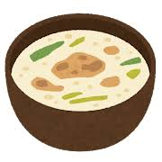

Meal Ending:
The knight settles down on the table indulging themselves on the medium bowl of soup that they found was just perfect in temperature. However they were interrupted by a ghastly figure who confronts them at the table.
After a little bit of chatter, you both clear any misunderstandings and decide to calm yourselves with a good meal. Once the storm ends, the Knight thanks the ghost for the food and leaves the mansion on safely.
